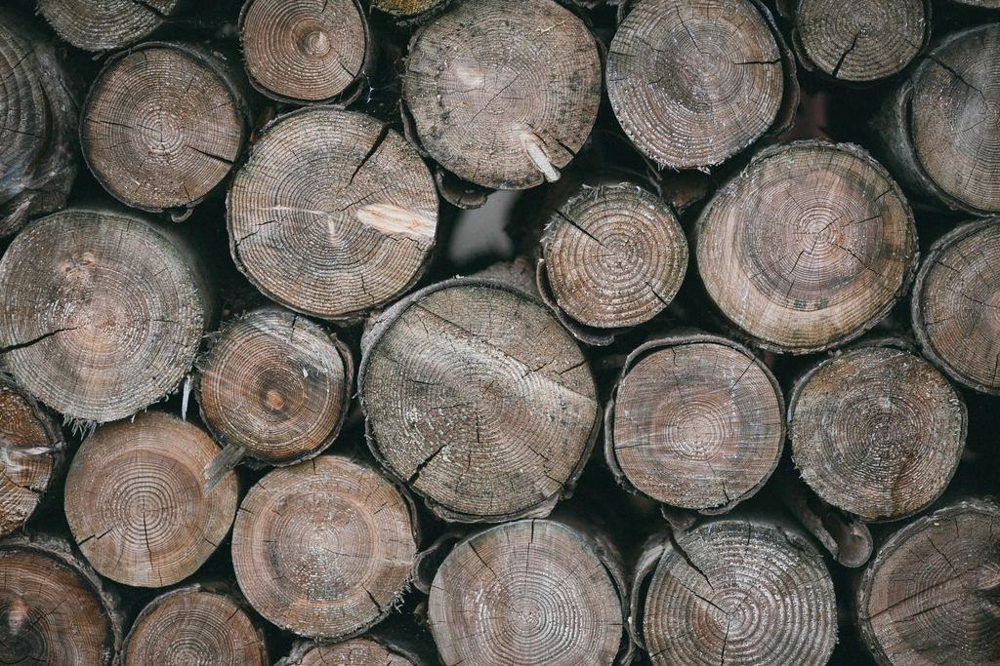

Uppdrag
Ett urval av fällningar, beskärningar och stubbfräsningar.
- 2026

Villa på Teg
Tre 24 meter höga björkar fällda över ett växthus och en altan.
- 2026

Förskolan Lingonet
Arbete under pågående verksamhet med tio meters avspärrning.
- 2025

Radhus på Haga
Kronreduktion av en björk som gav skugga åt fyra trädgårdar.
- 2025

Hyresområde Mariehem
Åtta björkar ersatta med rönn och oxel efter önskemål från allergiker.
- 2025

Sommarstuga i Holmsund
Två tallar fällda mot havet och flisade på plats.
- 2026

Skolgården på Öbacka
Besiktning av 31 träd inför vintern.


Omdömen
Grannar som sov igenom det
Jonatan W. · Teg”Jag jobbar natt och sov igenom hela fällningen. När jag vaknade var björken borta och gräsmattan krattad.”
Maja K., förskolechef · Ålidhem”Barnen kunde vara ute som vanligt. Ett par av dem satt vid staketet och tittade på klättrarna hela förmiddagen.”
Fatima A. · Mariehem”De föreslog rönn i stället för björk så att min dotter slipper pollen i maj. Det hade jag aldrig tänkt på.”